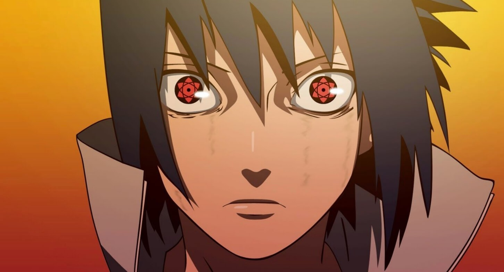

Encontre o Trevo de Quatro Folhas Vermelho!!
Sasuke Uchiha (うちはサスケ, Uchiha Sasuke) é um dos últimos membros sobreviventes do clã Uchiha de Konohagakure, além de ser a reencarnação atual de Indra. Ele se tornou um shinobi para que pudesse algum dia ficar forte o suficiente para se vingar contra o seu irmão mais velho, Itachi, que tinha massacrado todo o seu clã. Inicialmente, um membro do Time Kakashi de Konoha, Sasuke desertou da aldeia para obter poder com Orochimaru, e mais tarde também se juntou a Akatsuki, tornando-se um criminoso internacional no processo. Mais tarde, ele se torna uma peça fundamental para acabar com a Quarta Guerra Mundial Ninja, até ser finalmente redimido por seu rival, e também melhor amigo, Naruto Uzumaki. Sasuke decide voltar para Konoha, dedicando a sua vida para ajudar a proteger a vila e seus habitantes.
O Sharingan (写輪眼; Literalmente significa "Olho Copiador Giratório"; Significado (Panini) "Olho Espelhador Giratório") é um dōjutsu kekkei genkai, que aparece em alguns membros do clã Uchiha.[1] Apesar de seus poderes serem vistos pela primeira vez em Kaguya Ōtsutsuki, com o Rinne Sharingan, sua verdadeira forma se manifestou pela primeira vez em Indra Ōtsutsuki, o ancestral mais antigo do clã Uchiha, e mais tarde veio a ser considerado como um dos Três Grandes Dōjutsu (三大瞳術, Sandai Dōjutsu; Literalmente significa "Três Grandes Técnicas Oculares"), juntamente com o Byakugan e o Rinnegan.[2]